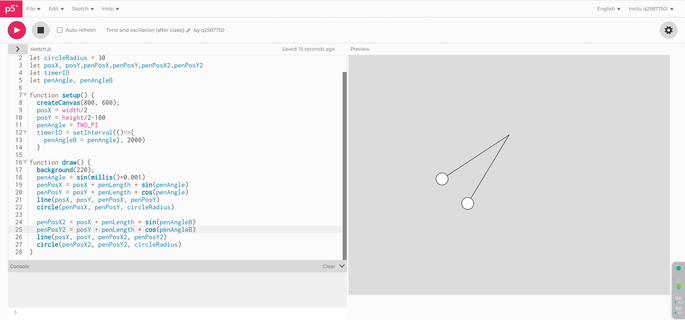
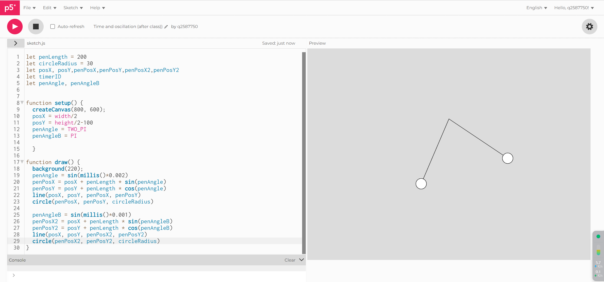
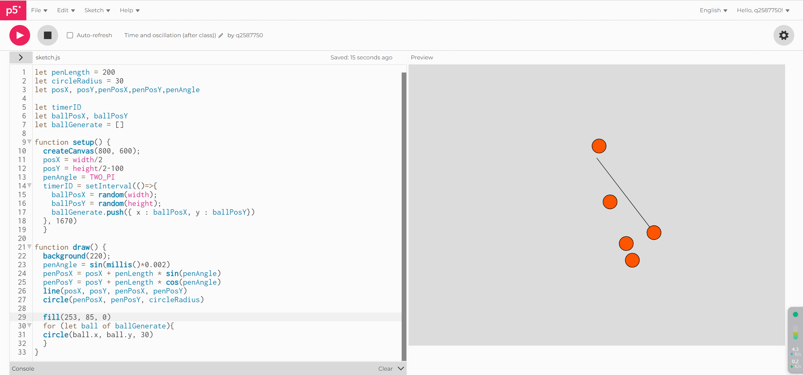
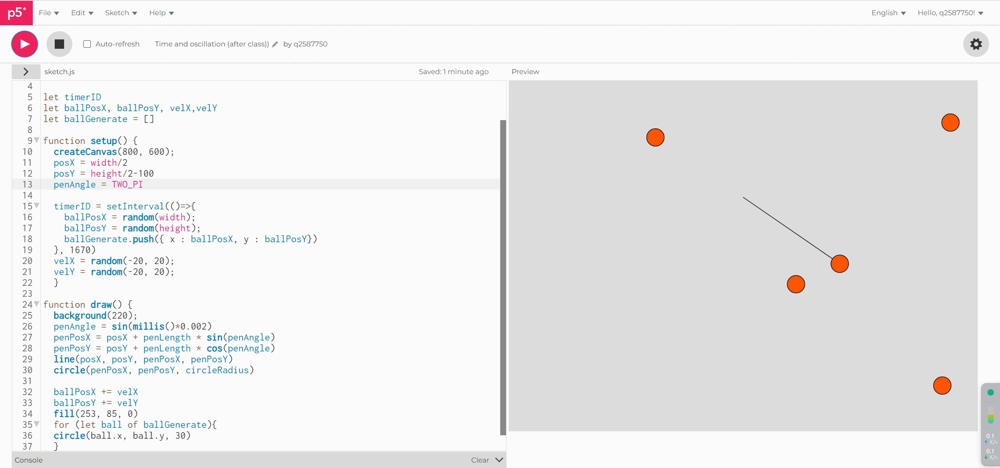
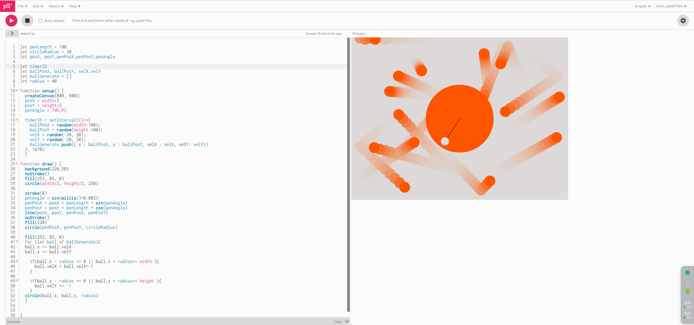

image1
image2: The question is that the 2rd pendulum suddenly appeared in the position of 1st pendulum, and it remained still.
image3: I found there was no need to use 'setInterval()' to achive the oscillation of two pendulums, so I changed the effect of 2rd graphic.
image4: I want to achieve the effect that some circles appear with the oscillation of the pendulum, and then they take a linear movement.
image5: the ball generated didn't move
image6: the question is that I didn't put 'ballPosX += velXba ll PosY += velY' in the loop function 'for (let ball of ballGenerate){}'.
my p5.js